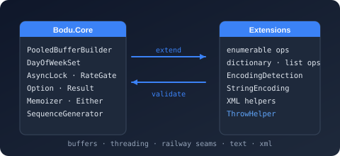

Bodu.Xml.Linq Namespace
- Package
-
Bodu.Core 1.3.0

Purpose
Bodu.Xml.Linq is a small XML / LINQ-to-XML helper namespace used internally by Bodu.Globalization.Calendar's rule parsers and exposed for consumers who need the same primitives. Reach for it when you need to resolve namespace prefixes against a fragment of LINQ-to-XML without standing up a full XmlNameTable.
Key types
- XmlNamespaceResolver - implements
IXmlNamespaceResolverover anXElementso XPath / prefix-aware queries can be evaluated against a LINQ-to-XML fragment.
Example
using System.Xml.Linq;
using System.Xml.XPath;
using Bodu.Xml.Linq;
XElement root = XElement.Parse(xml);
var resolver = new XmlNamespaceResolver(root);
IEnumerable<XElement> matches = root.XPathSelectElements(
"//bc:NotableDate[@territory='AU']",
resolver);
Notes
- Single-fragment scope. The resolver reflects the element's in-scope namespaces only; declarations on ancestors outside the fragment are not visible.
- Calendar rule documents. Authored notable-date rule files use the
urn:bodu:globalization:calendarnamespace; this helper resolves in-scope namespace prefixes when reading prefixed elements from such a fragment. - See also: the Bodu.Core introduction and Bodu.Globalization.Calendar.
Classes
- XmlNamespaceResolver
Resolves child XElement and XName instances against the default XML namespace of a supplied root element, removing the need to qualify every lookup with an inline namespace prefix.